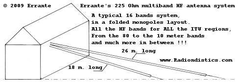

|
Planning a trip to Sicily? Then,
make sure you won't be feeding the Mafia!

|
|
|
If you have a scientific interest in the physics of the
radio, you should browse this site as an e-book!
|
|
|
|
Errante's 225 Ohm, multiband
HF antenna system.


Unlocking the full multiband
potential of the 225 Ohm elementary radiator in a folded monopole, dipole-like
or turnstile layout.
All the I.T.U. amateur radio
bands from the 80 m. to the 10 m. band and much more in between, in 16 ample
segments.
NB. In order to avoid misunderstandings, it must be
noted that this design has nothing to do with the electrically short (<<
� lambda) folded monopole, also generically known in this trade as "folded
unipole" which is an inherentely lossy and very low impedance
radiator.
click on the images to enlarge them
Errante's 2x225 Ohm virtual ground balun for the
dipole-like center-fed folded monopoles multiband HF antenna system.
Notice the two pivoting UV resistant Nylon insulators - each of them 42 cm long
- which make easy the anchoring of 2 folded monopoles on each side of the
balun. This is an ideal solution to install all the dipole branches with any
angle from about 120 degree to 180 and upwards again to the 120 degree. From
inverted "Vee" to open dipole and up to a "V".
The insulators are free to rotate around their axis, being the M8 studs which
also act as the balun's electrical terminals.
The insulators and the eyelet terminals are tightened independently from each
other.
�
Errante's 225 Ohm, multiband HF antenna system:
what it is and how it works.
by Francesco Errante
The multiband radio-electric
transducer system disclosed hereby is based upon the natural harmonic
resonance, a very well known physics phenomenon. This system, therefore,
does not utilize traps or loading coils or other artifacts for band
segmentation.
The radiators act, band by band, as mono-band full-size aerials by
resonating on a different fraction or a multiple of the relevant signal
wavelength, starting from 3/4 a wavelength at each set lowest operating
band.
By virtue of this radiator design, it possible to get several, well distinct,
sets of bands, each set giving 8 bands in the spectrum of the HF, each and
all of them yelding a COMMON IMPEDANCE VALUE of 225 Ohm. This
particular common impedance value is the key factor in this system
design, while Radiondistics' own patented virtual ground
broadband impedance coupling and phasing network technology has allowed
this system to work seamlessly with an exceptional impedance matching
throughout all its frequency ranges. NO additional A.T.U. (antenna
tuning unit) is needed and all its operating bands offer a generous width as
this is an high impedance antenna system.
Moreover, this system requires only a reasonable amount of space to be
deployed, it is easy to install and does not require tedious adjustment of
the length of its radiators, as all of its bands are well defined but NOT
critical. If necessary, the radiator can even be bent along its axis (this
will definitely affect its radiation pattern but not its original tuning) or
installed as a top fed sloper or as a center-fed inverted-vee with any angle
with respect to the ground. It also requires very little room clearance from
the ground or any other surrounding obstacles. Thanks to the
Radiondistics' proprietary RF feeding system, no de-tuning takes
place on the aerials unless they are almost right down onto the ground.
For example, a 225 Ohm folded monopole arrangement, for all the
I.T.U. amateur radio bands, from the 80 meter to the 10 meter, plus a lot
more in between, would take about 26.5 meters of space on a streight line,
while a center-fed dipole-like arrangement would need just twice as
much.
Accordingly, a range of feeding systems
have been deviced for:
folded monopole antennas with Errante's capacitive
earth grounding ;
center-fed dipole-like antennas. See Errante's 50/225+225 Ohm
balun ;
folded monopole antennas with Errante's virtual
grounding ;
folded monopoles in a turnstile antenna
configuration.
 |
|
RADIONDISTICS' products carry an
unconditional lifetime guarantee.
|
Prices:
Errante's 50/225 Ohm capacitive earth grounded UN-UN,
Euro 250,00 +V.A.T. and shipping costs ;
Errante's 50/225+225 Ohm BalUn, as pictured above
Euro 500,00 +V.A.T. and shipping costs ;
Errante's 50/225 Ohm virtual ground feeding system,
Euro 700,00 +V.A.T. and shipping costs ;
Errante's 4x 225 Ohm broadband turnstile driver,
Euro 1650,00 +V.A.T. and shipping costs.
For an useful currency converter click here
�
�
RADIONDISTICS' products carry an unconditional
lifetime guarantee.
|
|
|
|
�
|
�
All the concepts, methods, designs and devices presented on this
web site
are the original novelty works of FRANCESCO ERRANTE.
Patents & Copyright © 1985- of FRANCESCO ERRANTE.
Material is governed by the Copyright, Designs and Patent Act.
No reproduction, in whole or in part, without written permission.
Copies of these documents made by electronic or mechanical means, including information storage and retrieval systems, may only be employed for personal use.
All rights reserved.

|
All rights reserved. Copyright © 1985- Francesco Errante
www.Radiondistics.com - Tel.(+39) 339.180.1313
|
|